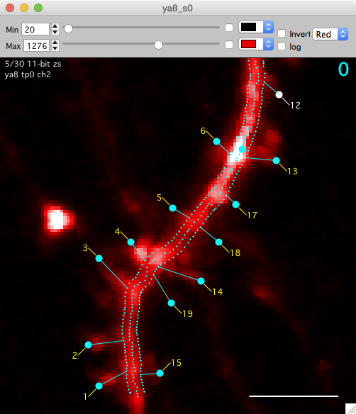
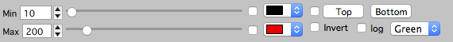
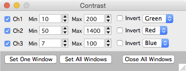
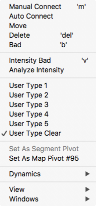
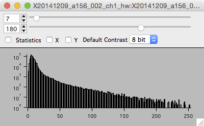
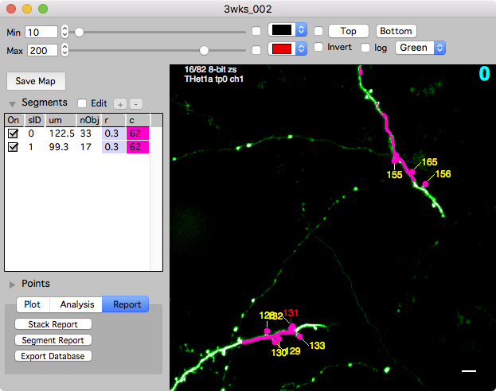
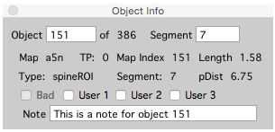
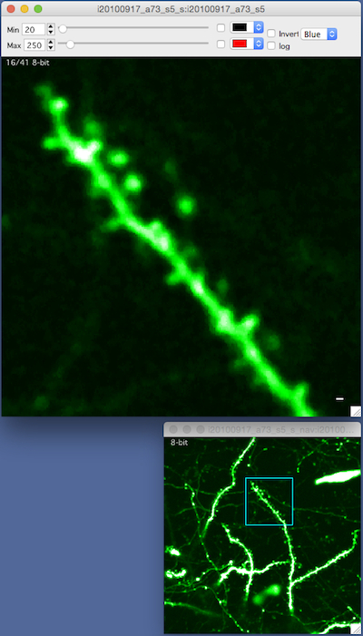
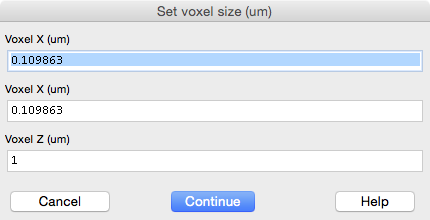

Stack
A stack window displays a 3D image stack, one image at a time

Navigating
Scrolling images
Mouse-wheel to scroll up and down through images.
Panning images
Mouse click+drag or keyboard arrow-keys to pan the image.
Zooming in and out
Ctrl + mouse-wheel or keyboard +/- to zoom in and out. All zooming will follow the mouse pointer.
Reset zoom
Keyboard Enter will return image to full zoom.
Selecting annotations
Single mouse-click to select an annotation. Selected annotations are highlighted in yellow. Keyboard n to edit the selected annotation note. Mouse right-click to show context menu for selected annotation.
Ctrl+click an annotation to center and zoom on that annotations. In a run plot, ctrl+click will center and zoom the annotation in all run plot windows.
Canceling annotation selection
Keyboard esc will cancel all selected annotations.
Multiple color channels
For image stacks with more than one color channel, use keyboard 1, 2, and 3 to switch between channels one, two, and three. Color channels can also be switched using the buttons window or the mouse right-click menu ‘view’.

Image contrast
Open the contrast bar with keyboard c, the right-click menu ‘View - Contrast Bar’, or use the buttons paenl ‘contrast bar’.
Image contrast is critical. If contrast is not set properly, dim but otherwise important structures in an image may not be visible. Setting the contrast does not modify the image, it is purely for visualization. To acheive optimal contrast, use the histogram (keyboard h) to choose the image contrast based on the intensity values in an image.
- Min. Pixel intensity values below ‘min’ will be displayed as black (default). Turn on the color checkbox and select a color for pixels below ‘min’.
- Max. Pixel intensity values above ‘max’ will be displayed as white (default). Turn on the color checkbox and select a color for pixels above ‘max’.
- Color Look-up-table popup. Choose a color look-up-table (LUT). For example, gray, green ,red, etc. etc.
- Invert. Invert the selected color LUT.
- Log. Display the image intensities using log (intensity).
- Top/Bottom. Turn on this checkbox to set a min/max contrast for both the top and bottom of an image volume. The contrast will be linearly adjusted for each slice. This is useful for image volumes that get darker at deeper depths.

Global image contrast
The global contrast panel provides an interface to set display parameters for all displayed stacks. The values specified in this panel will be used each time a new stack window is opened. This is useful if all your stacks have the same bit-depth and approximately the same brightness.
Open the global contrast panel with the main Map Manager menu ‘MapManager - Contrast’
The check boxes next to each channel specify if the value are to be used when a stack is opened.
The values can be saved from the Options Panel or the main Map Manager menu ‘MapManager - Save Options…’.

Right click
Right-click on the image and you will get a contextual menu to activate the features described on this page. Many of the options available in the right-click menu can also be set using the buttons window.

Buttons window
The buttons window provides a quick interface to perform actions on stack and map plot windows. The actions provided in the buttons window are also available from individual map manager windows using a mouse right-click.
Open the buttons window from the main menu ‘MapManager - Buttons’ or use keyboard ctrl+1.
Once open, the buttons window will automatically update based on the front-most Map Manager window. The ‘stack’ tab is for setting stack windows, the ‘Obj Map’ tab for setting map plot windows and the ‘Report’ tab is for generating reports.

Histogram
The histogram window show a histogram of pixel intensity values for each image in a stack.
Open the histogram window with keyboard h, the right-click menu, or the buttons window.
- The histogram window shows a pixel intensity histogram for one image. The y-axis is a log scale. This is useful because most images will have an order-of-magnitude more dark pixels, a log scale allows the contributions of the generally brighter signal pixels to be seen.
- Scroll through the image in a stack (mouse-wheel) and the histogram for each image will be show.
- Use the histogram to select the appropriate image contrast (top values and slider) for each stack.
Sliding z-projection and frame averaging
A sliding z-projection is a special stack where each image plane is replaced by a small z-projection showing slices just above and below the current image plane. For frame averaging, each image is replaced by the average of itself with a number of frames after it.
Switch channels or to a sliding z-projection using the following table. This is also available in the buttons window.
Important. Switch to a sliding z-projection with shift to set the sliding z-projection options including the number of slices and the type of projection (Maximal, Frame Average, Standard Deviation). For example, if you have one channel images, shift+3 will allow you to set the sliding z-projection options.
| # Ch / Keyboard | 1 | 2 | 3 | 4 | 5 | 6 |
| 1 Channel | Channel 1 | N/A | Sliding-Z Channel 1 | N/A | N/A | N/A |
| 2 Channels | Channel 1 | Channel 2 | Sliding-Z Channel 1 | Sliding-Z Channel 2 | N/A | N/A |
| 3 Channels | Channel 1 | Channel 2 | Channel 3 | Sliding-Z Channel 1 | Sliding-Z Channel 2 | Sliding-Z Channel 3 |
Here are some examples of the sliding z-projection in action.
|
Raw |
Sliding Z-Projection |
Maximal Z-Projections
Open a maximal Z-Projection with keyboard z or use the right-click menu.
Once the Z-Projection window is open, it behaves just like a stack window (with only one slice). For example, you can zoom with keyboard +/- or ctrl + mouse-wheel, pan with arrow keys or mouse click+drag, open the contrast bar with keyboard c, view a histogram with keyboard h, copy/paste the image to another program, etc., etc.
Scale bar
Each stack will display a white scale bar in µm. Control the length and thickness of the scale bar in Options Stack Display - Scale Bar. The scale bar can be hidden and displayed using ‘Window Candy’.
Window Candy
There are five different window decorations or candy options. Cycle different window candies with keyboard shift+c.
- None
- Scale Bar
- Scale Bar + Top Left Label
- Scale Bar + Top Left Label + Axis
- Scale Bar + Top Left Label + Axis + Slider
Set the default window candy in Options - Stack Display - Default Stack Candy.
Stack annotations

To manage annotations in a stack window, open the left control bar with keyboard [ or use the point list panel.
See stack annotations for details on creating and editing annotations.
- Create an annotation. Shift+click to create a new annotation. All annotations are 3D, the x/y coordinate is given by the position of the mouse cursor and the z coordinate is the currently viewed image slice.
- Select an annotation. Single-click to select an annotation. Selected annotations are yellow. Cancel the selection with keyboard esc.
- Move an annotation. Right-click and select ‘move’ menu.
- Delete an annotation. Keyboard del or right-click and select ‘delete’.
- Setting an annotation tag. Use the right-click menu. Tags include: bad, intensity bad, and user type.
- Setting an annotation note. Select the annotation and press keyboard n.

Point info
The Point Info window shows information about the currently selected object.
- Open the Point Info window from any stack window using keyboard i.
- Use the point info window to annotate objects with text notes.

Navigation window
The navigation window opens a new window with a maximal z-projection of the stack and shows the current zoomed view as a blue square.
- Right click and select ‘Navigation Window’ menu. A navigation window will be opened and your current zoomed view of the stack will be shown as a blue square.
- Zoom with +/- or pan with arrow keys and the blue-square tracks what you are looking at.
- The navigation window is, by default, a maximal z-projection of the entire stack.
Zoom window
Right click and select ‘Zoom Window’. The zoom window will follow the mouse pointer and show a zoomed in region of the current image.
Animating a stack or frame scan
Keyboard / to start/stop an animation through all slices or frames. Use shift+/ to set the frame rate and if the animation will loop. Use keyboard / or keyboard . to stop the animation.
Copy/Paste image into other programs
Igor Pro is very good at copying images to the clipboard so they can be pasted into other programs. From a stack window, copying will copy the image with all the annotations, it does not copy the contrast (top) and scoring (left) toolbars. Annotations can be hidden with t.

Voxel size
In most cases the voxel size will be set automatically. The x/y/z voxel size of each stack is set with keyboard shift+p. Setting the correct voxel size in µm is critical as MapManager performs many calculations in µm (NOT IN PIXELS). The voxel size must be set before annotations are created. Once annotations are created, you should not change the voxel size.
Stack window keyboard shortcuts
Map Manager makes heavy use of keyboard shortcuts. All of these keyboard shortcuts are available in the mouse right-click menu (which also lists the corresponding keyboard shortcut) and in the buttons window.
| Topic | Keyboard/Mouse | Action |
| Navigation | ||
| mouse-wheel | Scroll images in a stack or time-series | |
| arrow-keys | Pan image | |
| mouse click+drag | Pan image | |
| +/- | Zoom image. Zooming follows the mouse cursor. | |
| ctrl + mouse wheel | Zoom image. Zooming follows the mouse cursor. | |
| Enter/Return | Full zoom image | |
| ] | Toggle between 2 different window sizes | |
| left mouse-click | Select annotation | |
| ctrl + left mouse-click | Select, center and zoom annotation | |
| Toolbars | ||
| c | Toggle contrast toolbar (top) | |
| [ | Toggle annotation toolbar (left) | |
| ctrl + 1 | Open the buttons window | |
| Annotations | ||
| shift + mouse click | Create a new annotation. | |
| mouse left-click | Select annotation. Selected annotations are shown in yellow. | |
| esc | Cancel all selection | |
| t | Toggle annotations on and off | |
| n | Edit selected annotation note | |
| b | Toggle selected annotation bad/good | |
| control + left arrow | Go to previous annotation. For spine annotations, this will go to the previous spine along the segment tracing. | |
| control + right arrow | Go to next annotation. For spine annotations, this will go to the next spine along the segment tracing. | |
| Window Candy | ||
| shift + c | Toggle through 5 different window candy options. Use this to display and hide the scale bar, x/y axis, and the current/total slices (top left of stack window). This is useful to control how an image will be copied/pasted to another program. | |
| g | Toggle grid on/off. The grid will only display when window candy is set to ‘All’ (when the stack axis are visible). | |
| New Windows | ||
| h | Histogram | |
| z | Maximal Z-Projection | |
| i | Object info panel (lower case ‘i’ as in Info) | |
| shift+i | Stack info panel | |
| Movies | ||
| / | Start and stop movie of slices/frames | |
| shift + / | Start and stop movie with options | |
| . | Stop movie of slices/frames | |
| Time Series | ||
| l | Link window (lower case ‘l’ as in link) | |
| a | Make selected annotation addition | |
| s | Make selected annotation subtraction | |
| p | Make selected annotation persistent. Requires selection in previous timepoint. | |
| shift + left-arrow | Go to previous time-point (in the same window). Turn this on in options. | |
| shift + right-arrow | Go to next time-point (in the same window). Turn this on in options. |
Stack window keyboard shortcuts to display image channels
Depending on the number of color channels in an image, color channels can be switch using keyboard 1, 2, and 3. This includes single color channels, sliding z-projections, and merged RGB. It may be easiest to use the buttons window to set the displayed color channel.
Important. Switch to a sliding z-projection with shift to set the sliding z-projection options. For example, if you have one channel images, shift+3 will allow you to set the sliding z-projection options.
| # Ch / Keyboard | 1 | 2 | 3 | 4 | 5 | 6 |
| 1 Channel | Channel 1 | N/A | Sliding-Z Channel 1 | N/A | N/A | N/A |
| 2 Channels | Channel 1 | Channel 2 | Sliding-Z Channel 1 | Sliding-Z Channel 2 | RGB | N/A |
| 3 Channels | Channel 1 | Channel 2 | Channel 3 | Sliding-Z Channel 1 | Sliding-Z Channel 2 | Sliding-Z Channel 3 |